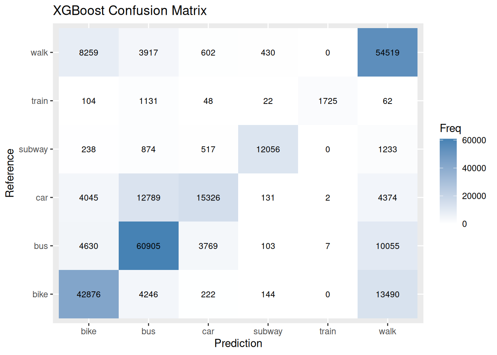

As always I start by loading the spatial and data manipulation libraries I’ll need: sf for spatial operations, dplyr for data wrangling, and purrr for functional programming tools. Then I inspect the contents of the osm.gpkg file using st_layers() so I can see which spatial layers are available before loading them.
Driver: GPKG
Available layers:
layer_name geometry_type features fields crs_name
1 highway Line String 43376 8 WGS 84 / UTM zone 50N
2 railway Line String 4095 7 WGS 84 / UTM zone 50N
Load the movement data set from last task
I load the movement dataset containing my GPS trajectory features. This dataset includes the features I created in the last task. I will later enrich it with movement-derived and contextual features.
Rows: 1004732 Columns: 40
── Column specification ────────────────────────────────────────────────────────
Delimiter: ","
chr (3): mode, geom, data
dbl (36): user_id, track_id, alt, steplength, timelag, speed, acceleration,...
dttm (1): datetime
ℹ Use `spec()` to retrieve the full column specification for this data.
ℹ Specify the column types or set `show_col_types = FALSE` to quiet this message.
Compute movement vectors and direction
Here I sort the data by trajectory and time so movement is sequential. Within each track_id, I compute step-wise displacement (dx_move, dy_move) using lead(). From this I calculate movement speed proxy (move_norm) and normalize the direction into unit vectors (ux, uy), which will later help compare movement direction with surrounding infrastructure.
I convert my dataframe into an sf spatial object so I can perform spatial operations like nearest-neighbour searches and distance calculations. I set the CRS to EPSG:32650 to match the projected OpenStreetMap data.
I load the OpenStreetMap-derived layers for highways and railways. These will provide the environmental context that I will use to improve travel mode prediction.
I explore the distribution of road and rail categories to understand which types are most common. This helps me decide how to group or simplify categories into more meaningful classes for modelling.
I ensure that both highway and railway datasets are in the same coordinate reference system as my movement data. This is necessary so that all spatial distances and spatial relationships are computed correctly.
I simplify the OSM categories into more meaningful groups: main rail vs metro lines, and roads into high-, mid-, and low-capacity types. I also extract cycling infrastructure separately using the cycleway attribute. This reduces complexity while preserving important contextual distinctions.
I define helper functions to compute direction-based features. First, get_dir() extracts the orientation of a line segment as a unit vector. Then compute_alignment() measures how well my movement direction aligns with nearby infrastructure by computing a dot product between movement vectors and segment directions.
I identify the closest infrastructure segment for each GPS point using st_nearest_feature(). This allows me to associate every movement observation with its most relevant nearby road or railway context.
I compute the exact spatial distance from each point to its nearest infrastructure of each type. These distances become strong contextual features that help distinguish, for example, cycling on roads versus riding near rail lines.
I extend my feature set by calculating how aligned each movement step is with nearby infrastructure. This helps capture whether a trajectory follows the direction of a road, railway, or cycling path.
Finally, I save the enriched dataset containing both movement-based and context-aware features. This file is then ready for model training and for comparing performance against last week’s baseline model.
write_csv(df, "full_dataset_with_context.csv")
Train model using previous python/tensorflow setup
In this step, I switch from feature engineering in R to model training in Python. I reuse the same model architecture from last week so that any performance differences can be attributed mainly to the new context features, not changes in the model itself.
By keeping the architecture fixed, I make the comparison fair: the only real change is the input feature set.
Compute evaluation metrics for Random Forest and XGBoost
I import the prediction results from the Python models back into R.
I restore the original class labels from the numeric predictions produced by the Python models.
First, I load the label mapping that was saved during preprocessing in Python. Since the mapping is stored in JSON format, I convert it into a usable R structure and invert it, so that numeric labels can be translated back into their original class names.
Finally, I apply this inverse mapping to both the true labels and predicted labels for the Random Forest and XGBoost results. This makes it so that all evaluation metrics and visualisations use the original, human-readable class names instead of encoded numbers.
In this step, I evaluate the performance of the trained Random Forest and XGBoost models using confusion matrices. From these, I extract overall accuracy and macro F1-score to get a high-level comparison of model performance. I also compute class-wise metrics such as recall, precision, and F1-score to understand how well each model performs on individual travel modes. This is important because overall accuracy can hide weaknesses in specific classes, especially in an imbalanced multi-class setting like transport mode classification. By structuring the results into a summary table and a detailed comparison table, I can directly compare both models across all relevant evaluation metrics.
Model Accuracy Macro_F1
1 Random Forest 0.7224093 0.6983966
2 XGBoost 0.7129781 0.7153429
comparison_table
Class RF_Recall XGB_Recall RF_Precision XGB_Precision
Class: bike Class: bike 0.7111581 0.7031388 0.7388823 0.7127943
Class: bus Class: bus 0.8004253 0.7663995 0.7131454 0.7262527
Class: car Class: car 0.4115417 0.4179780 0.8185073 0.7481937
Class: subway Class: subway 0.8084864 0.8081512 0.9283405 0.9355890
Class: train Class: train 0.4013583 0.5578913 0.9983910 0.9948097
Class: walk Class: walk 0.8049965 0.8049818 0.6624947 0.6511053
RF_F1 XGB_F1
Class: bike 0.7247552 0.7079336
Class: bus 0.7542688 0.7457862
Class: car 0.5477016 0.5363336
Class: subway 0.8642780 0.8672134
Class: train 0.5725490 0.7148777
Class: walk 0.7268267 0.7199128
Here I convert the confusion matrix tables into a format suitable for plotting with ggplot2 and visualise them as heatmaps. Each tile represents the number of predictions for a given true vs predicted class combination, which makes it easy to see where the models are making mistakes. Correct predictions appear along the diagonal, while off-diagonal values highlight confusion between similar transport modes. This visual representation helps complement the numerical metrics by showing how and where the models are failing, rather than just how often.
as.data.frame(cm_rf$table) |>ggplot(aes(Prediction, Reference, fill = Freq)) +geom_tile() +geom_text(aes(label = Freq), color ="black", size =3) +scale_fill_gradient(low ="white", high ="steelblue") +ggtitle("Random Forest Confusion Matrix")
as.data.frame(cm_xgb$table) |>ggplot(aes(Prediction, Reference, fill = Freq)) +geom_tile() +geom_text(aes(label = Freq), color ="black", size =3) +scale_fill_gradient(low ="white", high ="steelblue") +ggtitle("XGBoost Confusion Matrix")

Compute evaluation metrics for Neural Network
Next, I extend the same evaluation pipeline to the Neural Network model to ensure a fair comparison across all approaches. I first compute accuracy and macro F1-score, then build a combined results table that includes all three models. I also compute class-wise precision, recall, and F1-score for the neural network and merge them with the results from Random Forest and XGBoost. This allows a direct side-by-side comparison of all models on the same evaluation metrics and ensures consistency in how performance is measured.
Before computing the confusion matrix for the neural network, I load its prediction output from a CSV file and reconstruct the original class labels using a stored label mapping. Since the neural network outputs encoded labels, I reverse-map them back to human-readable transport mode names. This step is necessary to make the evaluation interpretable and consistent with the other models. Once the labels are restored, I compute the confusion matrix in the same way as for the other models, ensuring a fair and aligned comparison across all three approaches.
# Load NN lablesnn_results <-read.csv("nn_predictions_with_context.csv")# Map lables to resultslabel_map <-fromJSON("nn_label_map.json")label_map <-unlist(label_map)inv_map <-setNames(names(label_map), label_map)nn_results$y_true <- inv_map[as.character(nn_results$y_true)]nn_results$y_pred <- inv_map[as.character(nn_results$y_pred)]cm_nn <-confusionMatrix(factor(nn_results$y_pred),factor(nn_results$y_true))# Plot cmas.data.frame(cm_nn$table) |>ggplot(aes(Prediction, Reference, fill = Freq)) +geom_tile() +geom_text(aes(label = Freq), color ="black", size =3) +scale_fill_gradient(low ="white", high ="steelblue") +ggtitle("Neural Network Confusion Matrix")
Model Accuracy Macro_F1
1 Random Forest 0.7224093 0.6983966
2 XGBoost 0.7129781 0.7153429
3 Neural Network 0.6548311 0.6610809
comparison_table
Class RF_Recall XGB_Recall NN_Recall RF_Precision
Class: bike Class: bike 0.7111581 0.7031388 0.7733937 0.7388823
Class: bus Class: bus 0.8004253 0.7663995 0.5682216 0.7131454
Class: car Class: car 0.4115417 0.4179780 0.4790956 0.8185073
Class: subway Class: subway 0.8084864 0.8081512 0.8235018 0.9283405
Class: train Class: train 0.4013583 0.5578913 0.5705045 0.9983910
Class: walk Class: walk 0.8049965 0.8049818 0.7115478 0.6624947
XGB_Precision NN_Precision RF_F1 XGB_F1 NN_F1
Class: bike 0.7127943 0.6610968 0.7247552 0.7079336 0.7128497
Class: bus 0.7262527 0.7066114 0.7542688 0.7457862 0.6299050
Class: car 0.7481937 0.4996303 0.5477016 0.5363336 0.4891475
Class: subway 0.9355890 0.7406403 0.8642780 0.8672134 0.7798762
Class: train 0.9948097 0.8212291 0.5725490 0.7148777 0.6732824
Class: walk 0.6511053 0.6537475 0.7268267 0.7199128 0.6814242
Results
The results show a clear improvement in travel mode classification after incorporating contextual environmental features compared to the movement-only baseline from last week. All models benefited from the additional information, with Random Forest achieving the strongest overall performance at 0.72 accuracy and 0.70 macro F1, closely followed by XGBoost with 0.71 accuracy and the highest macro F1 of 0.72. The Neural Network also improved but remained the weakest model overall, reaching 0.65 accuracy and 0.66 macro F1. Compared to last week, this corresponds to a consistent gain of roughly 5–6 percentage points in accuracy for the tree-based models and a smaller but still noticeable improvement for the neural network. At class level, performance changes are uneven: subway and walking remain the most reliably classified modes across all models, with consistently high recall and F1-scores, while cycling also shows strong results, particularly in the neural network. The most difficult class continues to be car, which remains poorly separated from other road-based transport modes and shows relatively low recall across all models. Train classification, however, improves notably compared to last week, especially in XGBoost and the neural network, suggesting that railway proximity and alignment features provide meaningful additional signal.
Interpretation
Overall, these results suggest that contextual infrastructure features add substantial predictive value beyond raw movement dynamics. Distance to roads and railways helps the model infer likely transport mode based on spatial constraints, while directional alignment captures whether movement follows the orientation of infrastructure, which is particularly informative for rail- and road-based travel. This shifts the problem from purely trajectory-based classification to a more realistic setting where environmental constraints guide movement. Among the models, Random Forest appears most robust, likely due to its ability to handle heterogeneous feature interactions without heavy tuning, while XGBoost benefits from better class balancing performance. The neural network improves but still underperforms, indicating that it may require further tuning or more data to fully exploit the richer feature space.
Despite the overall gains, persistent confusion between car and other road-based modes highlights that these classes share similar spatial and movement patterns even with added context. Future improvements could focus on richer contextual signals such as proximity to intersections, traffic regulations, or temporal patterns to further separate these overlapping categories.
I initially expected the spatial context features to have a much larger impact on model performance than what was actually observed. While they do lead to a clear and consistent improvement across all models, the gain is more moderate than anticipated, especially given how directly these features relate to real-world movement constraints like road networks and railway lines. In particular, I assumed that proximity and alignment to infrastructure would significantly reduce confusion between similar transport modes, but the results show that certain classes, especially car and bus, remain difficult to separate even with this additional context. This suggests that while spatial features add valuable signal, they are not fully sufficient on their own to resolve ambiguities in movement behavior, and that other factors such as speed patterns, temporal structure, or more detailed contextual data may play a larger role than initially expected.
If I had more time, I would focus on further improving both the feature engineering and the model design to better exploit the available information. One direction would be to test feature selection or regularization techniques, especially for the neural network, since some of the spatial features may be redundant or noisy and could be hurting performance rather than helping it. I would also experiment with removing or simplifying certain context variables to see whether a more compact feature set actually generalises better. Another improvement would be to engineer additional contextual features, such as distance to intersections, road curvature, speed limits (if available), or temporal features like time of day and weekday patterns, which could help distinguish between similar transport modes such as car and bus. It would also be interesting to aggregate context over multiple nearby segments instead of relying only on the single nearest feature, since movement is often influenced by a broader environment rather than one closest object. On the modelling side, I would try more systematic hyperparameter tuning for all models, especially the neural network, and possibly explore stronger architectures such as recurrent or sequence-based models that can better capture trajectory dynamics over time. Finally, I would evaluate feature importance more carefully, to better understand which spatial signals actually contribute most to prediction performance and which might be adding unnecessary noise.
One important limitation of this workflow is the computational cost of the spatial feature engineering step. Calculating nearest infrastructure features, distances, and alignment values using sf operations took several hours to complete, especially when working with large numbers of GPS points and multiple spatial layers. This made the pipeline relatively slow and difficult to iterate on during development. In future work, I would try to optimise this part of the workflow by using more efficient spatial processing approaches, for example by leveraging spatial databases such as DuckDB with spatial extensions, or other indexing-based methods that can significantly speed up nearest-neighbour and distance queries. It may also be worth precomputing certain spatial joins or simplifying geometries to reduce computational overhead. Improving this part of the pipeline would make experimentation much faster and allow for more extensive feature engineering and model testing within the same timeframe.